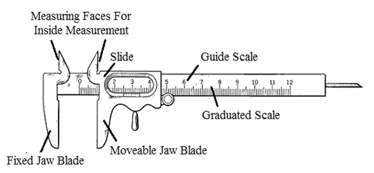

Q.29: Write short notes on Use of Vernier Calliper
Answer:
b) Use of Vernier Calliper
It uses two scales one fixed and the other movable, and then the difference between these two scales can be utilized, to enhance the accuracy of measurement. It consists of two scales, main scale and vernier scale. Main scale is engraved on solid L-shaped frame and vernier scale slides on the main scale. Vernier scale, which slides on the main scale, has a movable jaw, which slides on the frame. The movable jaw can be locked at any desired position with the help of locking screw. The work to be measured is kept between the jaws for measuring the outside dimensions. Inside dimensions can be measured using inside jaws.

Least count = Smallest division on main scale/Total number of divisions on Vernier scale = 1/10 = 0.1mm.
Following are the important parts of Vernier calipers:
1. Outside jaw: Used to take external measures of objects.
2. Inside jaws: Used to internal measures of objects.
3. Depth probe: Used to measure the depth of objects.
4. Main scale.
5. Vernier scale
Application of Vernier caliper:
It is used for both internal and external measurements. It is generally used by closing the jaws on to the work and taking the reading from the main as well as the vernier scale. To obtain the reading, the number of divisions on the main scale is read off. The vernier scale is then examined to determine which of its division coincide or most coincident with a division on the main scale.